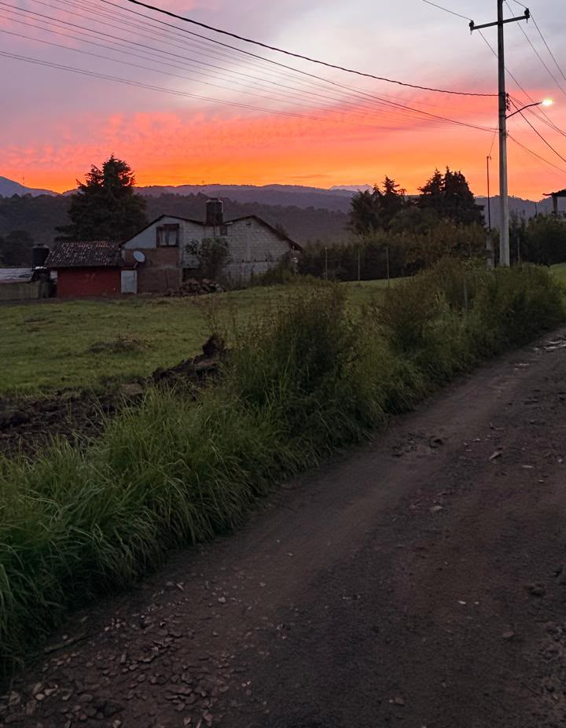
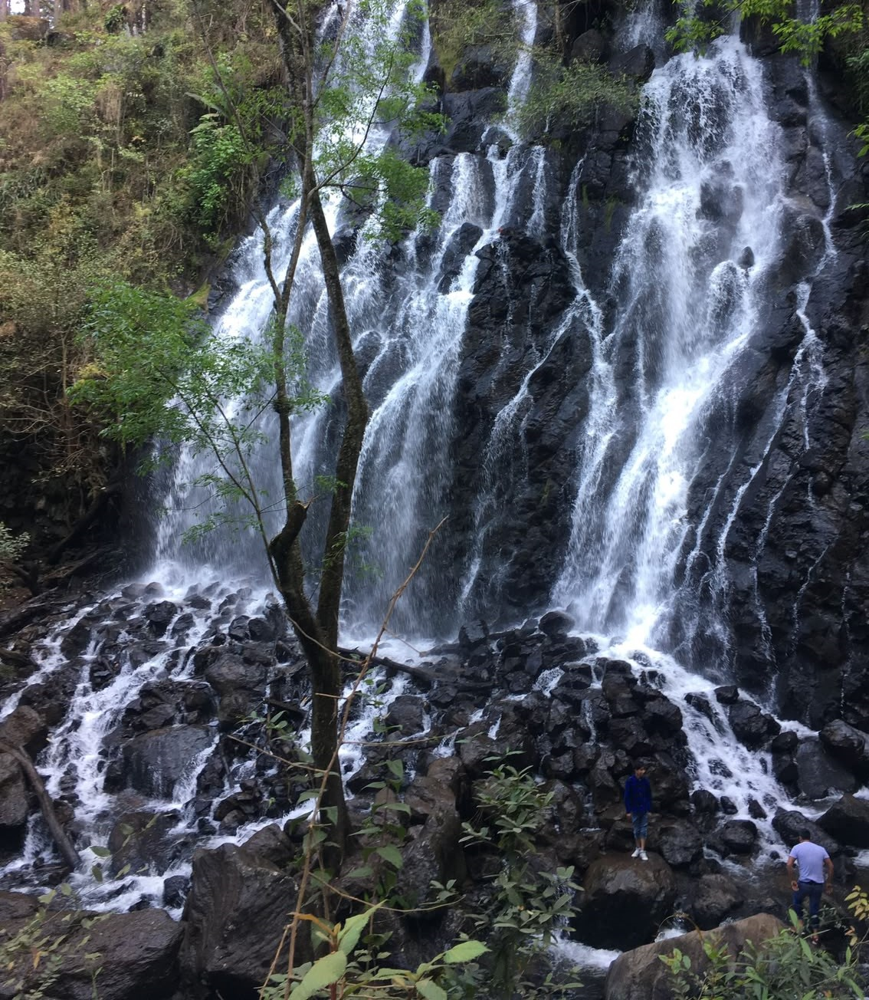
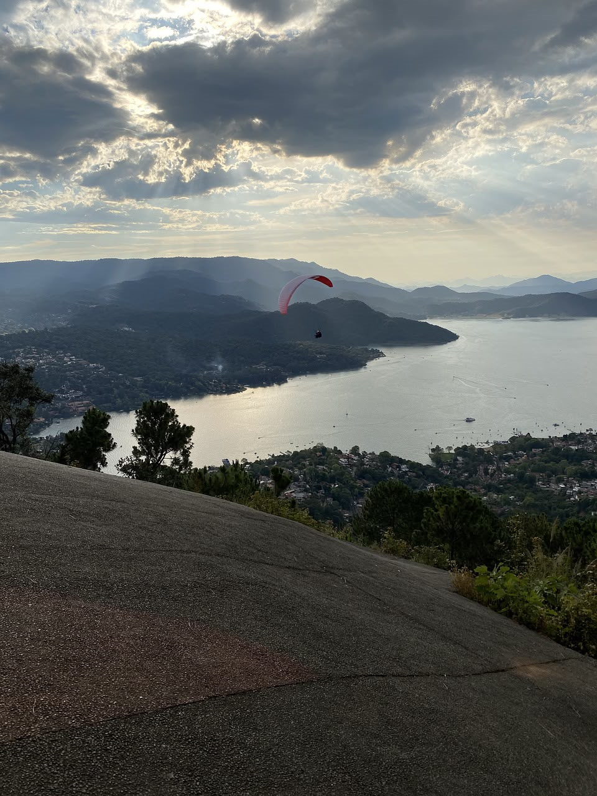

Nido de paz y rincón de encanto, donde el alma descansa entre el agua y el monte.
Admiracion de atardeceres.
Es un pueblo turistico que se encuntra a 2.30 hrs-3 hrs de Ciudad de Mexico.
Tiene uno de los mejores climas para parapente, por sus corrientes termicas,tambien hay zonas locales y baratas con mercados, antojitos y tianguis.
Toda la cuenca era un valle rodeado de volcanes como el nevado de toluca y cerros.
El suelo es una roca volcanica por eso hay mucha piedra negra y tierra fertil.
Fue fundado por fransiscanos como San Fransisco del valle.
El atardecer en valle de bravo es uno de los paisajes naturales mas bonitos.
Durante ese mommento el cielo se llena de tonos naranjas, rosas y morados que se reflejan en las aguas del lago.
Actualmente, el sol se oculta alrededor de las 18:24 horas, aunque este horario varía a lo largo del año desde las 18:00 (en noviembre) hasta las 19:22 (en julio).
Noviembre a abril (La mejor época): Durante la temporada seca, el cielo suele estar completamente despejado.
la temperatura desciende de forma abrupta en cuanto el sol se oculta, especialmente en los miradores elevados.
Mayo a octubre (Temporada de Lluvias): Las nubes de tormenta dispersas generan atardeceres sumamente dramáticos, coloridos y fotogénicos, perfectos para los amantes de la fotografía.

Lugares conocidos de Valle de Bravo.
La cascada velo de novia es la mas famosa de Valle de Bravo esta a solo 20-25 minutos del centro.
Es una cascada de 35 metros de caida que esta dentro del parque velo de novia , en el camino hacia avandaro.
Su nombre es porque el agua cae blanca y abierta, como si fuerabel velo de una novia.
Se forma del rio amanalco, el mismo que alimenta el lago de Valle de Bravo.
El agua cae a una poza pequeña.
Puedes acercarte desde el puente colgante de madera que cruza a la cascada.
El lugar esta lleno de pinos, neblina y musgo, parece de cuento.
La mejor epoca para ir a verla con mucha agua es de julio a octubre, que es temporada de lluvias.
En epoca de secas baja mucho el chorro y casi no se ve.
Abajo de la cascada hay puestos de elotes, truchas, artesanias y muchas cosas mas.
Los alrededores cuentan con áreas acondicionadas con bancos, mesas y asadores para pícnics familiares.
Desde la entrada del parque hasta la base de la cascada hay una caminata de unos 15 minutos cuesta abajo, rodeada por un denso bosque de pinos y oémetl, lleno de musgo y helechos.

Acerca de valle de bravo.
El lago de Valle de Bravo en realidad se llama Presa Miguel Aleman.
Se hizo entre 1947 y 1953 cuando el gobierno construyo una cortina para generar energia electrica para la ciudad de Mexico.
Para esto indundaron todo el valle y bajo el agua quedaron 2 pueblos completos, incluyendo la iglesia vieja.
Mide 21 kilometros cuadrados y tiene 18 kilometros de largo.
Esta a 1,280 metros de altura,por esto el clima siempre esta fresco aunque haga sol.
Su nivel cambia muchisimo segun las temporadas de lluvia.
Valle de Bravo es la capital de la vela en México.
Debido a los vientos constantes que entran por las montañas, es la sede anual de importantes regatas nacionales e internacionales.
Hay múltiples clubes náuticos que rentan veleros y ofrecen clases para principiantes.
Tras enfrentar un periodo crítico de sequía en años recientes debido al fenómeno de El Niño, el nivel del lago de Valle de Bravo ha mostrado una notable recuperación gracias a las abundantes lluvias de las últimas temporadas.
